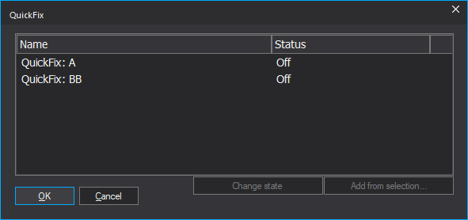
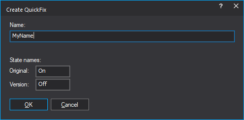

|
The Dialog QuickFix (Menu Edit) |

  
|
|
The Dialog QuickFix (Menu Edit) |
|


QuickFixes define smaller groups of status changes independently of the version. The states (usually: on/off) are saved in the maps (number-to-text) and are therefore available in all versions and can be quickly activated or deactivated.
Apply:
Click on the line in the dialog and then on 'Change status' to achieve the desired status. Close the dialog with OK to change the hexdump as desired.
Create (manually):
You can create a QuickFix manually:
| · | Create a new folder in the map tree. The name must start with "QuickFix:" |
| · | Define maps in this folder that cover exactly the memory locations you want to change. All maps must contain number-to-text definitions with the same texts (state names). However, they can refer to different values. |
Create (from selection):
(This is a WinOLS Premium-Features.)
You need a version where some values have been changed.
| · | Select these (max 200 cells). Unchanged cells must not be selected. |
| · | Use the Add button in the QuickFix dialog. |
| · | Enter a name for the QuickFix and for the states of Original and Version. |
XDF-Import (OLS526)
When importing an XDF file, XDFPATCH blocks are imported as QuickFixes.
Reseller:
QuickFixes are technically maps + map folders. They are therefore included both when purchasing a project and when purchasing a version. They are only not included in an original-only purchase because it does not contain any maps.
Shortcuts:
Toolbar: -
Keyboard: Shift+Q